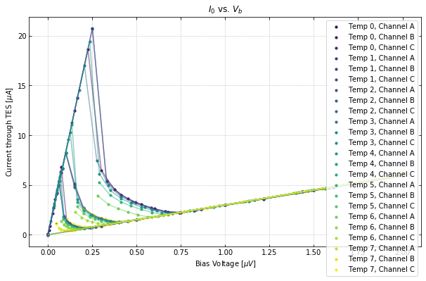
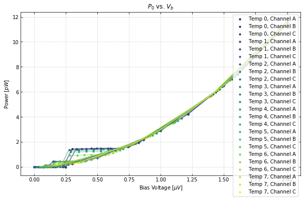
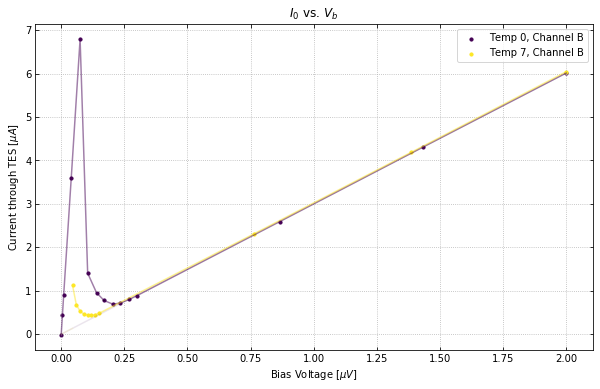
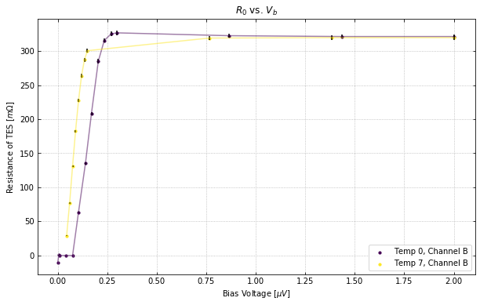
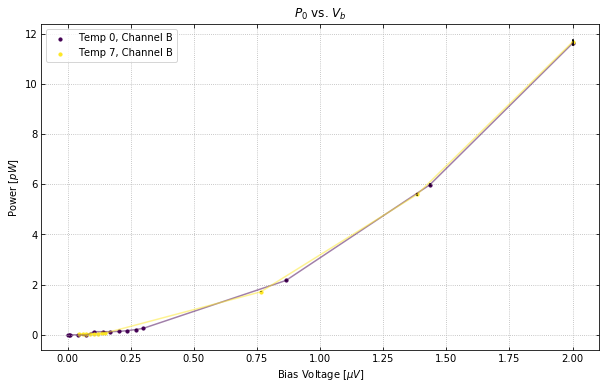
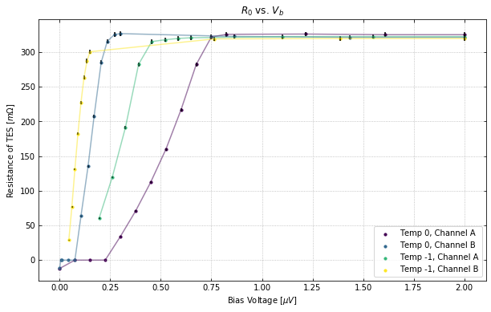

Table of Contents
Example Code for using the IV class¶
Import the need packages to run the test script
In [1]:
import numpy as np
from qetpy import IV
Let’s load the example data. To see how this data was created, look at
the run_31_chips_iv.ipynb file, which loads the data from Pickle
files. This data was created from Run 31 at SLAC, using TES chips. There
is no guarantee that that notebook will run.
In [2]:
testdata = np.load("test_iv_data.npz")
dites = testdata["dites"]
dites_err = testdata["dites_err"]
vb = testdata["vb"]
vb_err = testdata["vb_err"]
rload = testdata["rload"]
rload_err = testdata["rload_err"]
Now let’s use the IV class and calculate the IV curves
In [3]:
ivdata = IV(dites, dites_err, vb, vb_err, rload, rload_err, ["A","B","C"])
ivdata.calc_iv()
Let’s take a look at the plotting. We can plot all of the curves together.
In [4]:
ivdata.plot_all_curves()



If you want to plot certain channels or certain bath temperatures, use the chans and temps flags.
In [5]:
ivdata.plot_all_curves(temps=[0,7], chans=1)



We can also plot the IV, resistance, and power curves separately. See the documentation for more information on the plotting options.
In [6]:
ivdata.plot_iv(temps=0, chans=0, showfit=False);
ivdata.plot_rv(temps=[0,-1], chans=[0,1]);
ivdata.plot_pv(temps="all", chans=2);



In [ ]: